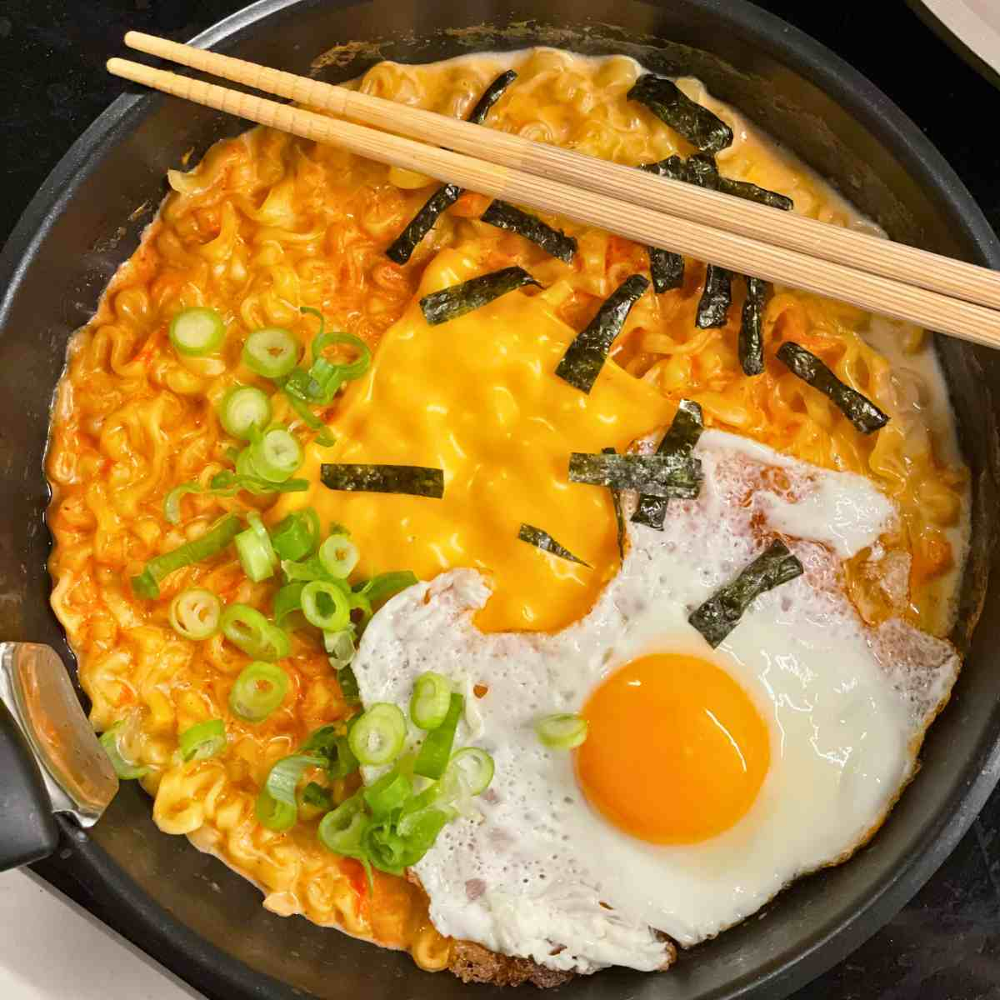

Cheesy Ramen Noodles

Description
Ultimate quick noodle dish. Rich, creamy and packed with flavour.
With melty cheese, garlic and a touch of spice, it's an easy comfort
dish you'll crave on repeat.
Ingredients
- 1 packed of any flavour Ramen noodles
- 2 cups of water
- 1 slice American cheese
Steps
- Gather all ingredients
- Bring water to boil in saucepan
- Add Ramen noodles and cook until tender
- Pour out water, stir seasoning packet and cheese until well blended
Go back to Home